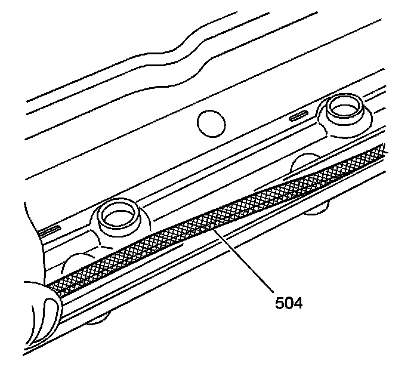
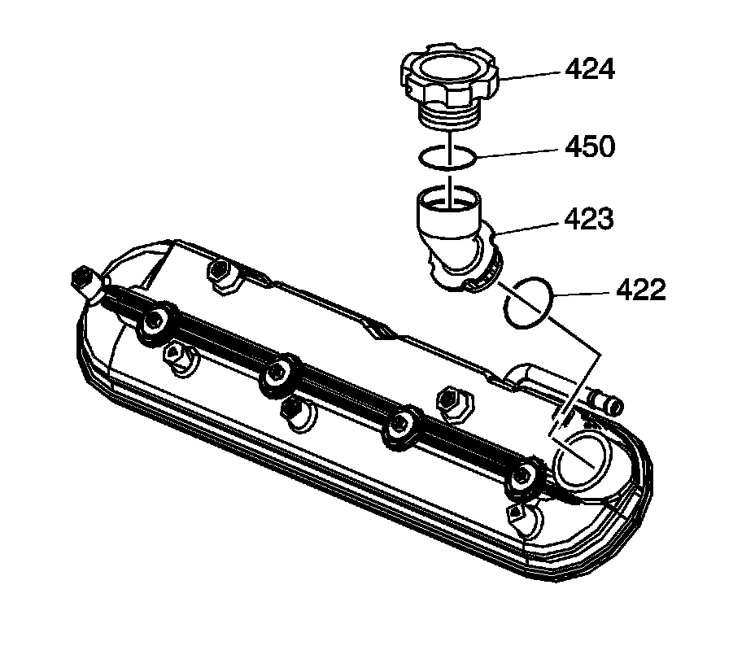
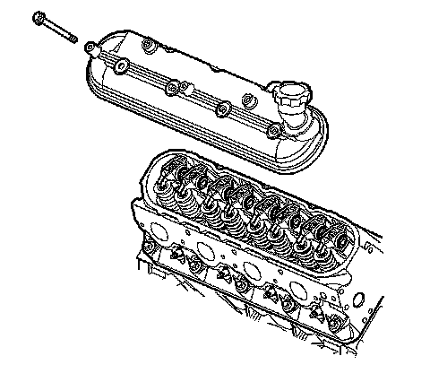
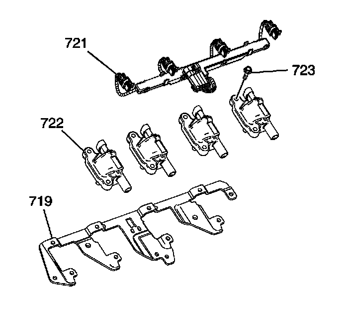
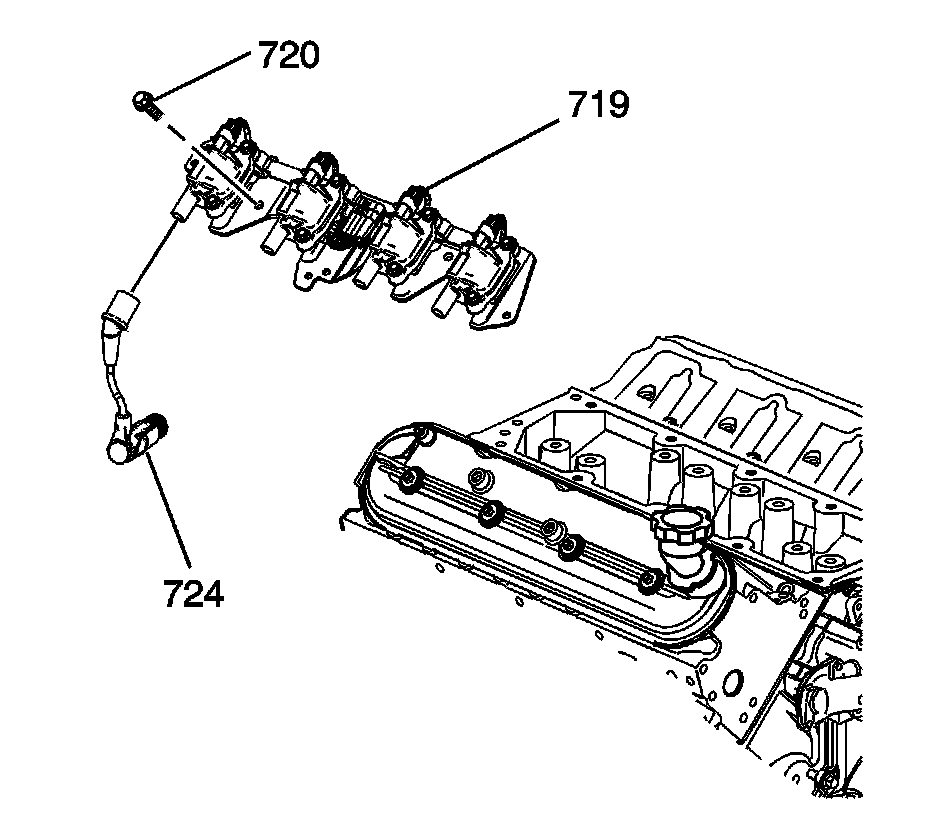

86. Valve Rocker Arm Cover Installation - Right Side
Valve Rocker Arm Cover Installation - Right Side

Important:
^ All gasket surfaces should be free of oil or other foreign material during assembly.
^ DO NOT use the valve rocker arm cover gasket again.
^ The valve rocker arm cover bolt grommets may be used again if not damaged.
Install a NEW gasket (504) into the valve rocker arm cover.

1. Install a NEW oil fill tube (423) to the valve rocker arm cover.
2. Install the oil fill cap (424).

3. Install the valve rocker arm cover onto the cylinder head.
Notice: Refer to Fastener Notice.
4. Install the cover bolts with grommets.
Tighten the valve rocker arm cover bolts to 12 N.m (106 lb in).

5. Apply threadlock GM P/N 12345382 (Canadian P/N 10953489), or equivalent, to the threads of the ignition coil bolts (723).
6. Install the ignition coils (722), wire harness (721), and bolts (723) to the bracket (719).
Tighten the ignition coil bolts to 10 N.m (89 lb in).

7. Apply threadlock GM P/N 12345382 (Canadian P/N 10953489), or equivalent, to the threads of the ignition coil bracket studs (720).
8. Install the ignition coil and bracket assembly (719) and studs (720).
Tighten the bracket studs to 12 N.m (106 lb in).